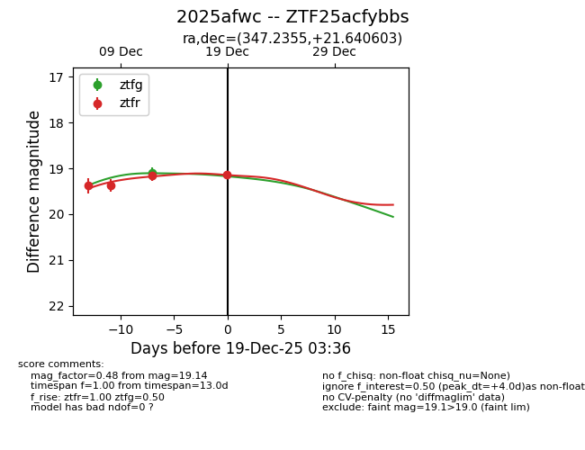
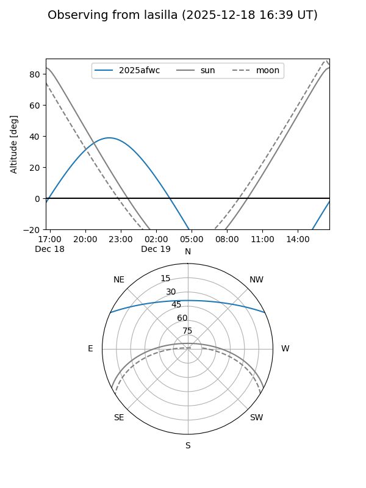
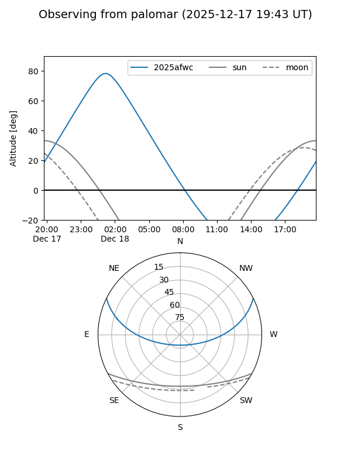
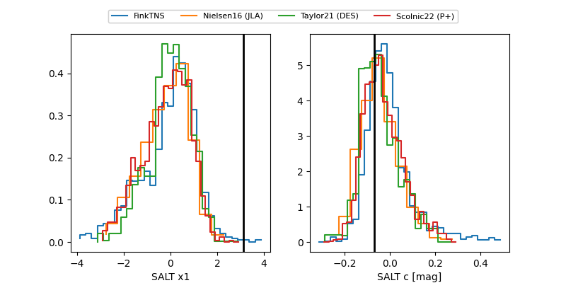

2025afwc
Target 2025afwc at 2025-12-21 03:17
Aliases and brokers:
FINK: fink-portal.org/ZTF25acfybbs
Lasair: lasair-ztf.lsst.ac.uk/objects/ZTF25acfybbs
ALeRCE: alerce.online/object/ZTF25acfybbs
TNS: wis-tns.org/object/2025afwc
YSE: ziggy.ucolick.org/yse/transient_detail/2025afwc
alt names
ZTF25acfybbs (ztf,fink_ztf)
2025afwc (tns,yse)
Coordinates:
equatorial (ra, dec) = 347.2355,+21.64060
equatorial (HMS+DMS) = 23:08:56.52,+21:38:26.17
galactic (l, b) = (93.4276,-35.29167)
Flags:
Photometry:
last ztfg=19.29, ztfr=19.14
3 ztfg, 4 ztfr detections
Lightcurve

Visibility


Additional plots
